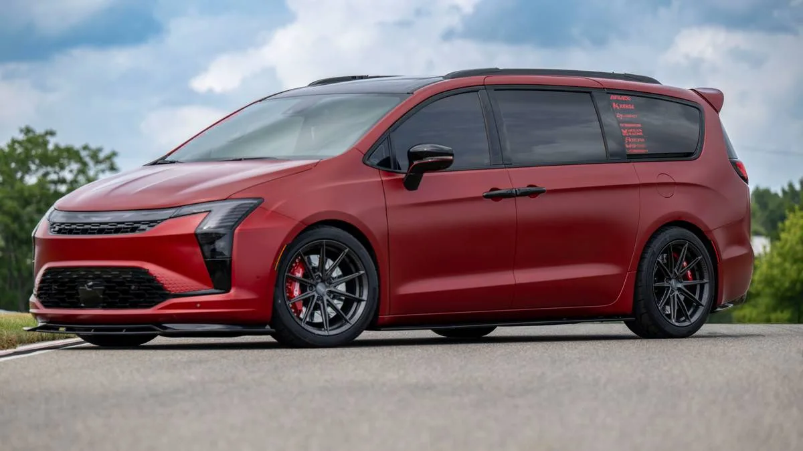
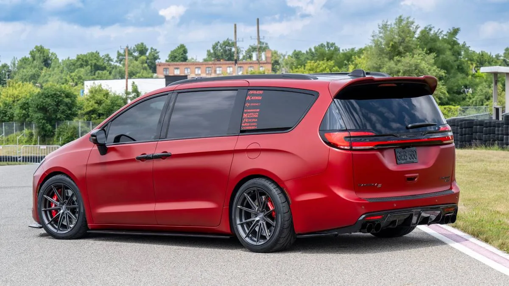
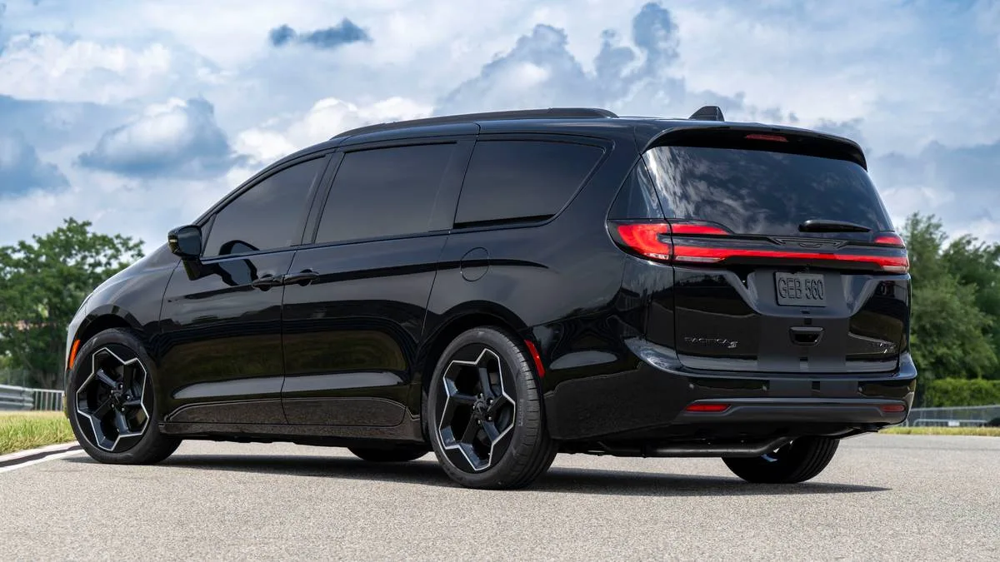

▲ 크라이슬러 퍼시피카 '반쿨쳐' 콘셉트. VANkulture와 크라이슬러가 협업해 미시간 로드킬 나이츠에서 공개했다
크라이슬러가 미니밴 튜닝 커뮤니티 VANkulture와 손잡고 만든 퍼시피카 '반쿨쳐' 콘셉트를 2026년 8월 미시간 로드킬 나이츠 행사에서 공개했습니다. 가장 먼저 눈에 들어오는 것은 색상입니다. "체포당할 만큼 빨갛다"고 표현될 정도로 강렬한 Arvex 새틴 PPF 랩이 차체 전체를 감쌌습니다. 여기에 조정식 코일오버 서스펜션으로 순정 대비 2.5인치 차고를 낮춰, 미니밴에서는 좀처럼 보기 힘든 로우라이더 실루엣을 완성했습니다.
1. 미니밴이 이렇게까지 낮아질 수 있다니
이 콘셉트의 완성도를 끌어올린 것은 VIS 레이싱이 제작한 전용 에어로 패키지입니다. 측면 스커트, 맞춤 제작된 프론트 립, 루프 스포일러, 리어 디퓨저가 조합돼 스톡 퍼시피카와는 완전히 다른 인상을 만들어냅니다. 여기에 20인치 보센 휠, 스모크 처리된 헤드라이트, 어둡게 마감한 도어 핸들과 사이드미러 액센트가 더해지며 디테일까지 완성도를 높였습니다. MagnaFlow 머플러 시스템도 장착돼 배기음까지 신경 쓴 흔적이 엿보입니다.

▲ 코일오버 서스펜션으로 2.5인치 낮춘 차고와 20인치 보센 휠이 만들어낸 로우라이더 실루엣
2. "헬캣은 안 됩니다" — CEO가 직접 선 그은 이유
미니밴에 강렬한 튜닝이 더해지자 자연스럽게 나온 반응이 "헤미 헬캣 V8을 얹어달라"는 팬들의 요구였습니다. 하지만 크라이슬러 CEO 매트 맥알리어는 이를 공식적으로 부인했습니다. 그는 "퍼시피카는 언제나 가족의 삶을 더 쉽게 만드는 것이 목표"라며, 고성능 V8 탑재는 이 차의 정체성과 맞지 않는다는 입장을 분명히 했습니다. 실제로 이번 콘셉트에도 V8 헤미 엔진은 장착되지 않았습니다. 겉모습은 과격하게 바뀌었지만, 심장은 여전히 가족용 미니밴의 것이라는 이야기입니다.
| 항목 | 내용 |
|---|---|
| 차고 조정 | 순정 대비 2.5인치 다운 |
| 휠 | 20인치 보센 |
| 에어로 패키지 | VIS 레이싱 풀 킷 |
| 배기 시스템 | MagnaFlow 머플러 |
| 도장 | Arvex 새틴 PPF 랩 |
| V8 헬캣 탑재 | 없음 (CEO 공식 부인) |

▲ VIS 레이싱이 제작한 리어 디퓨저와 스모크 처리된 램프가 미니밴답지 않은 인상을 만든다
3. 직접 만들 수 있다는 현실성
이 콘셉트가 흥미로운 또 다른 지점은 '현실성'입니다. 완성차 업체의 콘셉트카 대부분은 양산이 불가능한 실험적 요소로 가득하지만, 반쿨쳐 퍼시피카는 다릅니다. VIS 레이싱의 바디 킷을 주문하고 약간의 정비 작업만 거치면, 일반 소비자도 자신의 퍼시피카를 비슷한 스타일로 꾸밀 수 있다는 점입니다. 크라이슬러가 이번 콘셉트를 통해 노린 것은 결국 미니밴 튜닝 문화, 그리고 VANkulture 같은 팬 커뮤니티와의 접점을 넓히는 것으로 보입니다.

▲ 로드킬 나이츠 행사장에 전시된 반쿨쳐 퍼시피카. 크라이슬러는 이 프로젝트를 통해 미니밴 튜닝 커뮤니티와의 접점을 넓히려 하고 있다
4. 여전히 미국 1위 미니밴, 그래서 나온 여유
크라이슬러가 이런 파격적인 튜닝 협업에 나설 수 있는 배경에는 견조한 판매 실적이 있습니다. 퍼시피카는 2025년 미국에서 11만6대가 팔리며 혼다 오디세이(8만8,462대), 기아 카니발(7만1,917대)을 제치고 미니밴 부문 판매 1위 자리를 지켰습니다. 이미 시장에서 확고한 입지를 다진 만큼, 크라이슬러로서는 판매 부담 없이 브랜드 이미지를 젊고 재미있게 가꾸는 데 여력을 쓸 수 있었던 셈입니다.
5. 정리 — 미니밴 튜닝 문화의 새로운 얼굴
반쿨쳐 퍼시피카는 양산과는 거리가 먼 순수한 쇼카입니다. 그러나 크라이슬러라는 완성차 업체가 직접 미니밴 튜닝 커뮤니티와 협업했다는 사실 자체가 이례적입니다. 헬캣 같은 파워트레인 업그레이드는 없었지만, 서스펜션과 휠, 바디킷만으로도 미니밴이 이렇게 달라질 수 있다는 것을 보여준 사례입니다. 가족용 실용차로만 여겨지던 미니밴 시장에서도, 개성을 표현하려는 튜닝 문화가 점차 자리 잡고 있음을 보여주는 흥미로운 신호입니다.